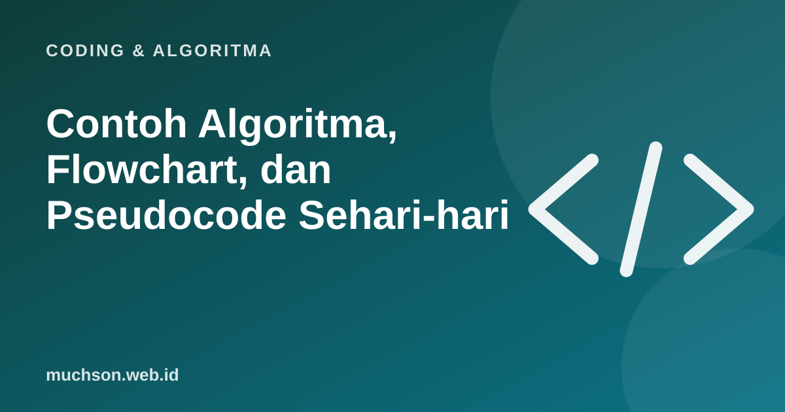

Beranda › Artikel › Coding & Algoritma
Coding & AlgoritmaContoh Algoritma, Flowchart, dan Pseudocode Sehari-hari
Algoritma, flowchart, dan pseudocode adalah materi wajib di pelajaran Informatika dan kuliah pemrograman dasar. Ketiganya adalah cara menuliskan langkah penyelesaian masalah sebelum menjadi kode. Artikel ini memberi contoh yang lengkap, mulai dari kegiatan sehari-hari sampai soal yang sering muncul di tugas sekolah dan kuliah.

Tiga cara menuliskan langkah
| Bentuk | Seperti apa | Kelebihan |
|---|---|---|
| Algoritma (kalimat) | Daftar langkah dalam bahasa sehari-hari | Mudah dipahami siapa saja |
| Flowchart | Diagram dengan simbol dan panah | Alur percabangan dan perulangan terlihat jelas |
| Pseudocode | Mirip kode, tapi tanpa aturan bahasa tertentu | Dekat dengan program, mudah diterjemahkan ke bahasa apa pun |
Simbol flowchart standar
Simbol flowchart dibakukan dalam standar ISO 5807. Lima simbol ini paling sering dipakai:
Contoh 1: menentukan bilangan genap atau ganjil
Algoritma
- Mulai.
- Masukkan bilangan n.
- Hitung sisa pembagian n dengan 2.
- Jika sisanya 0, tampilkan "genap". Jika tidak, tampilkan "ganjil".
- Selesai.
Pseudocode
MULAI
INPUT n
JIKA n MOD 2 = 0 MAKA
TAMPILKAN "genap"
SELAIN ITU
TAMPILKAN "ganjil"
AKHIR JIKA
SELESAIPython
n = int(input("Bilangan: "))
if n % 2 == 0:
print("genap")
else:
print("ganjil")Contoh 2: menghitung rata-rata nilai (perulangan)
MULAI
INPUT jumlah_siswa
total ← 0
UNTUK i DARI 1 SAMPAI jumlah_siswa
INPUT nilai
total ← total + nilai
AKHIR UNTUK
rata ← total / jumlah_siswa
TAMPILKAN rata
JIKA rata ≥ 75 MAKA TAMPILKAN "Kelas tuntas"
SELESAIContoh 3: algoritma sehari-hari (ATM)
MULAI
MASUKKAN kartu
percobaan ← 0
ULANGI
INPUT pin
percobaan ← percobaan + 1
SAMPAI pin BENAR ATAU percobaan = 3
JIKA pin BENAR MAKA
INPUT jumlah
JIKA jumlah ≤ saldo MAKA
KELUARKAN uang
saldo ← saldo - jumlah
SELAIN ITU
TAMPILKAN "Saldo tidak cukup"
AKHIR JIKA
SELAIN ITU
BLOKIR kartu
AKHIR JIKA
SELESAIPola yang sering keluar
Contoh ATM menggabungkan perulangan (mencoba PIN maksimal 3 kali) dan percabangan bertingkat. Pola seperti ini sering muncul di soal ujian.
Aturan menulis pseudocode yang baik
- Satu langkah per baris.
- Gunakan kata kunci konsisten: MULAI, INPUT, JIKA, MAKA, SELAIN ITU, UNTUK, ULANGI, SAMPAI, SELESAI.
- Beri indentasi untuk isi percabangan dan perulangan.
- Gunakan nama variabel yang jelas.
- Jangan terlalu detail sampai mirip bahasa tertentu; fokus pada logika.
Latihan
Tanya jawab
Apa beda algoritma, flowchart, dan pseudocode?
Algoritma adalah urutan langkahnya. Flowchart menggambarkannya dengan simbol. Pseudocode menuliskannya mirip kode tanpa aturan bahasa tertentu.
Apa saja simbol flowchart?
Yang paling umum: oval (mulai/selesai), persegi panjang (proses), jajar genjang (input/output), belah ketupat (keputusan), dan panah (arah alur).
Apakah pseudocode punya aturan baku?
Tidak ada aturan tunggal. Yang penting konsisten, satu langkah per baris, dan memakai indentasi yang jelas.
Contoh algoritma dalam kehidupan sehari-hari?
Resep masakan, langkah menarik uang di ATM, menyeberang jalan, dan rutinitas pagi.
Sumber dan bacaan lanjut
- ISO 5807: Information processing, documentation symbols for flowcharts
- Python: tutorial resmi
- Algoritma untuk anak (artikel terkait)